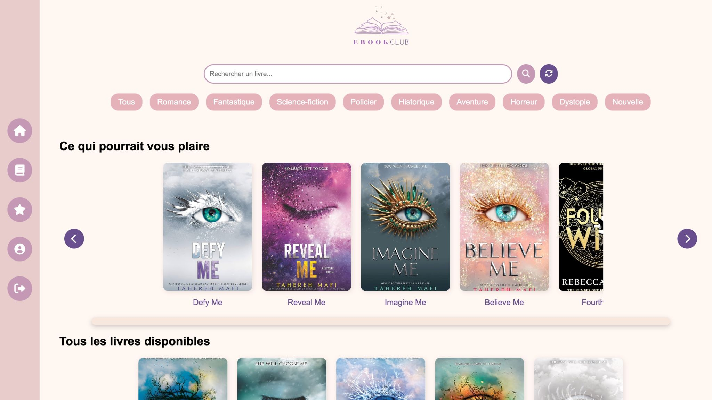

Ebook Club — eBook Library
Java
Spring Boot
Thymeleaf
DB
Application web d’e-books interactive : recherche par genre, recommandations, favoris, notes/avis, fiche détaillée et téléchargement de l’eBook.
- Recherche par genre + filtres
- Recommandations personnalisées
- Favoris, notes & avis
- Téléchargement eBook
